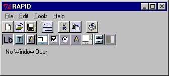
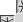
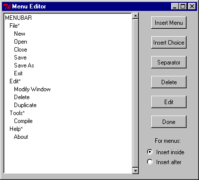

RAPID
Users' GuideRAPID
Users' Guide
RAPID
Users' GuideRAPID
Users' GuideRAPID is the Rapid Ada Portable Interface Design Tool. It was originally implemented by Dr. Martin C. Carlisle of the United States Air Force Academy Department of Computer Science. Since its initial release in November 1998, several people have contributed to the design and implementation of the tool. In particular, RAPID 2.0 was made possible by significant contributions of W. Blair Watkinson II. Look under Help/About in RAPID for a list of contributors.
This page is intended to provide some basic information about using RAPID. It is often hard as the implementor to know what things will be unclear to users. If you have suggestions on how to improve this page, send them to: Martin Carlisle
A good start is to look at the Original RAPID paper (postscript) presented at SIGAda '98. This contains some basic information on how to use RAPID as well as more detailed information on the implementation.
Follow these links to:
Starting RAPID
Using the widgets
Editing the window
Working with menus
Main program information
Starting RAPID
When you first open RAPID, you will see a window that looks like the
following:

At this point, the user should either open an existing .gui file (using the open file button or menu choice) or create a new one (using the new button or menu choice). For each application develped using RAPID, the user should name exactly one window "main". The main window is the controlling window for the application, and when this window is closed, the application will exit. The name of a window is changed using the Modify Window choice from the Edit menu. When you create a new window, the dialog will ask for a window name.
Alternatively, you can specify the name of a .gui file on the command line (or even set it so that RAPID opens when you double-click on a .GUI file in some windowing systems, including Win 95/98/NT). This feature is NOT implemented in the JVM version.
All of the following widgets are selectable on the toolbar. Push a button to select which kind of widget to create. (Note on the JVM version the button does not seem to stay depressed, but instead the button that is drawn without a border indicates which type of widget is currently selected). Then in the window below, while holding down the left mouse button, draw a rectangle where you want the widget to appear. The size and location of this rectangle will be the size and location of the new widget. Following this, a dialog will appear asking you to fill in properties for the widget. You must fill in all of the properties. If you do not, and press ok or apply, you will hear a beep and the cursor will move to an invalid property. Each widget must have a name. To pick a name, follow the rules for Ada identifiers. Most widgets have helpful procedures/functions in the Mcc.Gui packages.
After a widget has been drawn, you can click and drag it to move it.
Also, if you click it, resizing buttons will appear. Finally, right-clicking
the widget reopens the properties dialog for that widget. Some widgets
also have the ability to select a font. In this case, there will
be a change font button that brings up a dialog like the following.
You may either select a font, or choose "select default" and allow the
GUI to use the standard font for that widget.

Following are the widgets currently supported in RAPID:
Text label. This
has text, justification (left, right or center), foreground color and background
color. For colors, you may enter the name of a common color (e.g.
"red"). These are found in Mcc.Gui.Colors. It should be relatively
straight-forward to add other colors to the enumeration type (this requires
recompiling RAPID). You may also type "default", which yields default
behavior.
Text button.
This has text and an action. An action is any Ada code that would
be valid inside a begin/end block. If it begins with an identifier,
an appropriate "with" clause will be generated for the first identifier
if it is fully qualified (i.e., if you specify "File_Menu.New_Choice" as
an action, a "with" clause for File_Menu will be generated automatically).
Picture button.
Same as above, but instead of text, has a picture (which should be the
name of a GIF file). Additionally, the user can specify a tooltip,
which will appear after the mouse has rested over the button for a brief
period of time.
Single line text
entry. This has an action which is performed when the user presses
enter. See Text button for a discussion of actions.
Check button. Allows
the user to turn on/off the check button. Has a text label.
Radio button--
the radio button is unique among widgets as it comes in groups. Only
1 radio button may be selected at a time. The user must enter the
group name along with the widget name.
 Listbox with optional
scrollbars. A list of items. User can select foreground color
and background color. Also can select whether or not to have a vertical
or horizontal scrollbar. Add and delete entries from the listbox
(or query which is selected) using the utilities in Mcc.Gui.Widget.Listbox.
If an invalid color is chosen, you will be prompted to reenter.
Scale widget.
Creates a slider which is used to enter a value from a discrete range.
Progress bar.
Used to mark progress of an operation (between 0.0 and 1.0). User
can select foreground color and background color (see Text label for a
discussion of colors). If an invalid color is chosen, you will be
prompted to reenter.
Dropdown list.
Used to select from a list of items when real estate is sparse (list only
appears when button is pushed). User can select foreground color
and background color (see Text label for a discussion of colors).
Also can specify how many rows will appear when list is displayed.
Add and delete items from the list (or query which is selected) using utilities
in Mcc.Gui.Widget.Dropdown.
Editing the window
With a window open, you can not only create new widgets by clicking
and dragging, and can also perform the following actions:
Working with menus
If you push the "Menu" button, you will see a screen like the following:

From this screen, you can add submenus (followed by "*") or choices. In the bottom right corner, we select whether to insert inside the menu as its first entry, or after the menu if a we insert when a menu is highlighted. Insertions always occur after the highlighted entry. The MENUBAR entry is a dummy entry that allows you to insert before the first menu.
If we insert, we get a dialog with the properties. The user must enter the name of the menu (what is displayed), its action (Ada code-- see the discussion of Text buttons in Using the widgets above), an underline position (which character is underlined, use 0 for no underline, 1 to underline the first character, 2 for the second, etc.), and a shortcut. Shortcuts should like "Ctrl+X", to indicate that Ctrl+X also activates this menu item.
Once finished, push "Done" and you will see the menu above the editing area.
The compile button generates Ada code to implement the designed GUI. Note this compiles the GUI to Ada-- it does not compile the Ada. If your window is called "hello_world", then "hello_world_window.ads" and "hello_world_window.adb" will be created. Recall you MUST have one window named "main" (which, when compiled, yields "main_window.ads" and "main_window.adb"). Then, the user must write the rest of the program, including a main program, which should look like the following:
with Main_Window;
with Mcc.Gui.Container_Window;
procedure Demo is
begin
Main_Window.Generate_Window;
Mcc.Gui.Container.Window.Event_Loop;
end Demo;
Each window is then opened by calling its Generate_Window procedure. Callbacks occur when buttons are pushed, menu items selected, etc. See Using the widgets above for more information.
The packages in the Mcc.Gui hierarchy contain useful functions for interacting
with RAPID generated widgets. For example, Mcc.Gui.Widget.Text_Entry
contains methods for setting and reading the text entry, among others.